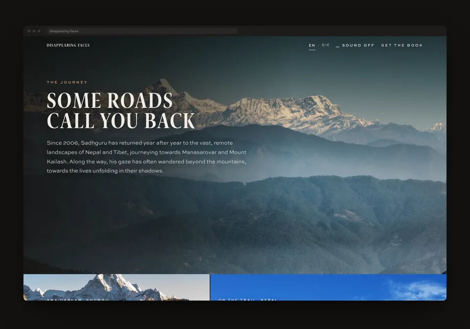
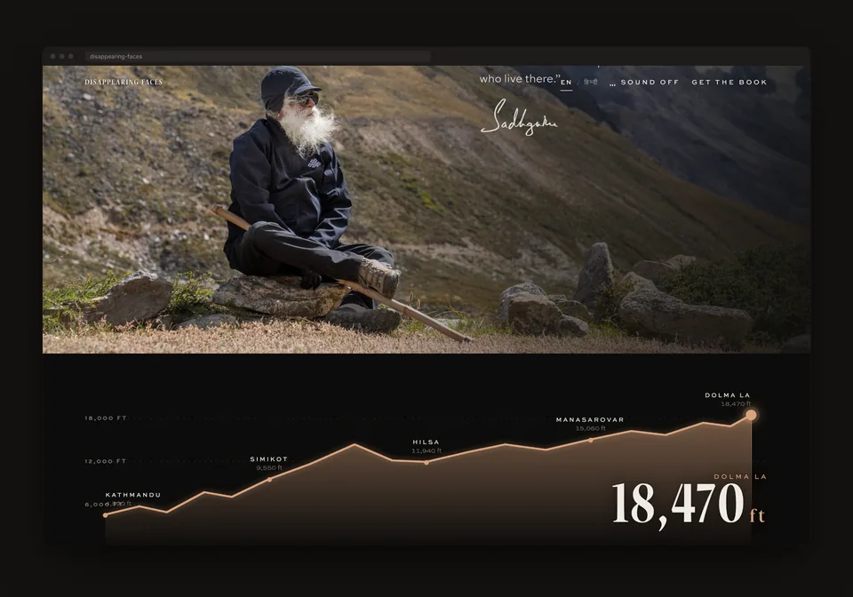
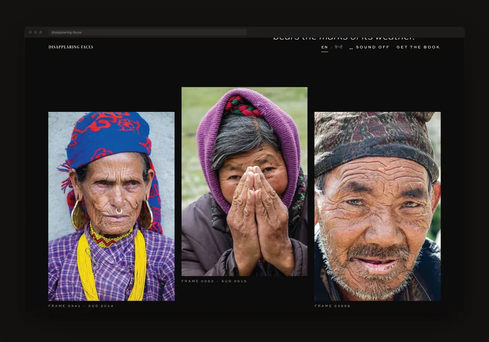
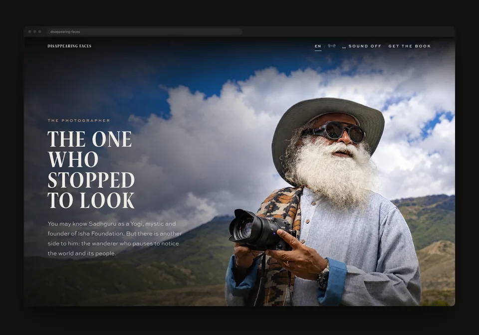
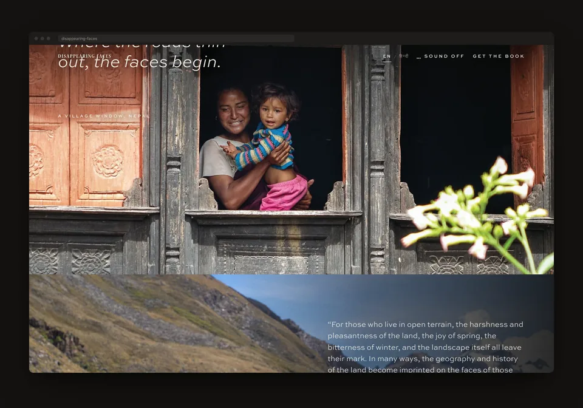
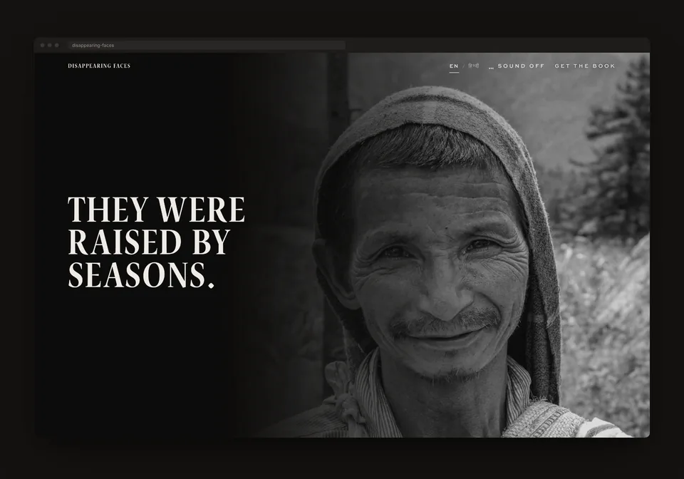
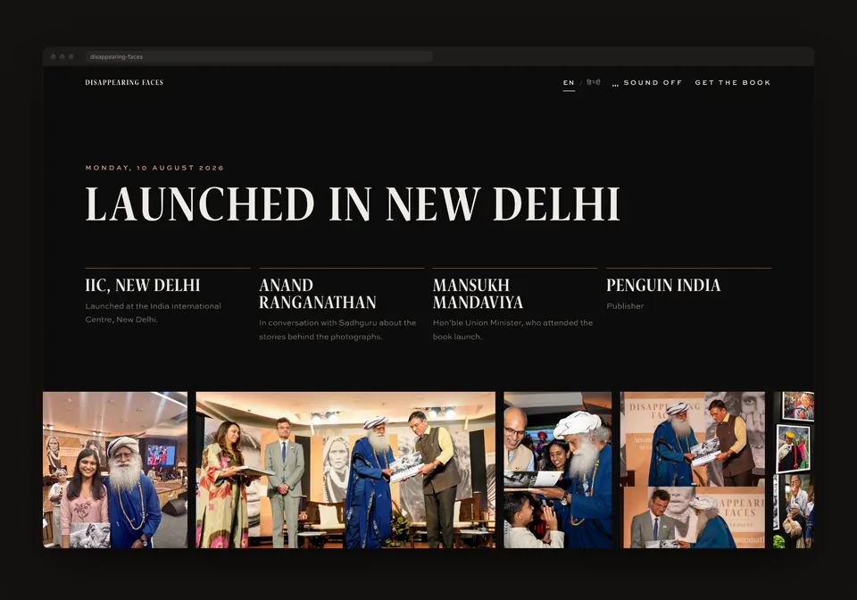
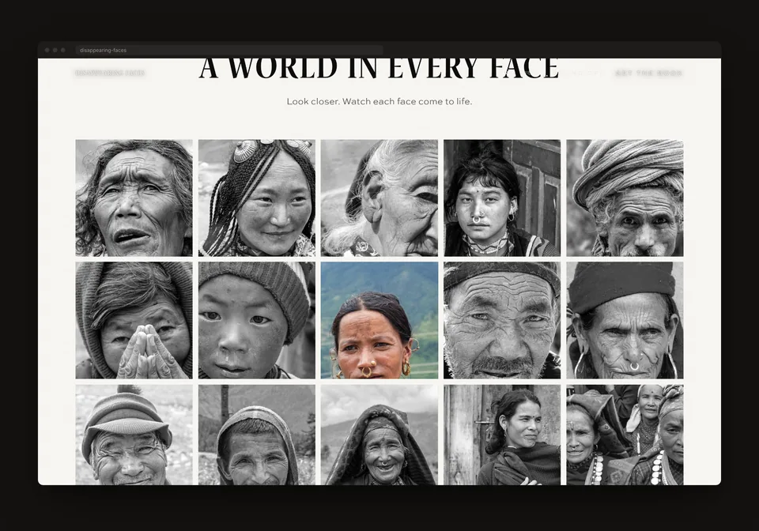
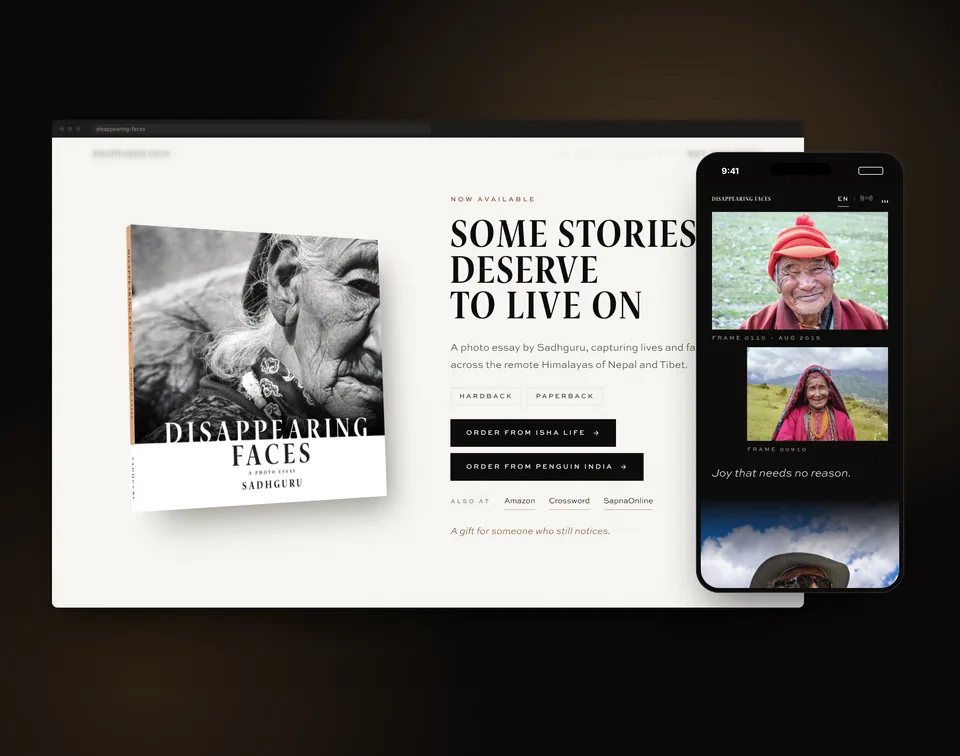

Disappearing Faces
A launch website for Sadhguru’s photo essay of the Himalayas, designed to feel less like a book page and more like walking through the exhibition.

Sell the feeling, not the book.
The book is about a way of life that is slipping away, not about the people themselves. So the page doesn’t open on a product shot. It opens on the road: the landscapes Sadhguru has returned to since 2006, an altitude line climbing from Kathmandu to Dolma La at 18,470 ft, and only then the first face. Most visitors arrive on a phone, and the book is sold by other stores, so the page ends on clear routes to Isha Life, Penguin India and Amazon.


Landscape, a quote in Sadhguru’s words and the climb in altitude set the mood before any selling.
Portraits shown one by one, at a pace that asks you to look closely.
Hardback and paperback, with direct links to every store that sells the book.
Black walls, gold light.
The look comes from the physical exhibition: black walls, a raised serif title and warm gold light. Titles are set in Fedra Display, always in capitals, with Sweet Sans for reading. Each portrait gets room to breathe and is labelled with its frame number and date, like a print on a gallery wall.





One page, every screen, two languages.
One scroll-driven page that works on a phone first, with an English and a Hindi version from the same file, an optional soundtrack, a book that opens in 3D, an index of faces that come to life as you look, and coverage from the launch in New Delhi.




A language switch that keeps your place on the page.
An optional theme that starts only when you turn it on.
Photographs by Sadhguru. Book published by Penguin India.